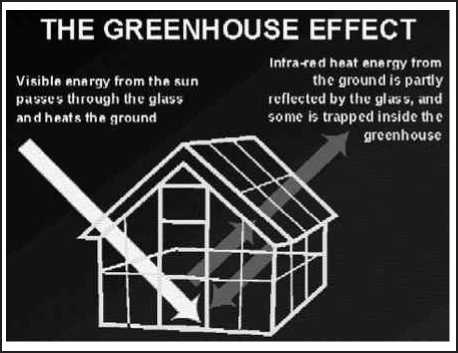
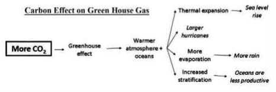
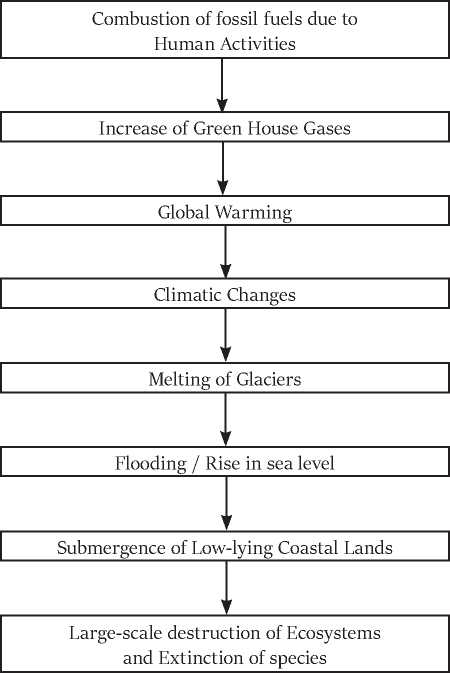

Climate is the long-term average of a region’s weather events. The Earth’s climate is not static. Over the billions of years of earth’s existence, it has changed many times in response to natural causes like sun spot, ice age glaciations, etc.
“Climate change” means a change of climate which is attributed directly or indirectly to human activity that alters the composition of the global atmosphere and which is in addition to natural climate variability observed over comparable time periods.
However, when today people talk about ‘climate change’, they mean the changes in climate over the last 100 years which is caused predominantly by human activity.
The phrase ‘climate change’ represents a change in the long-term weather patterns. Climate change is not a change of weather in a particular day; it is the cumulative change of long term weather pattern i.e. changes in climate. For example, it’s possible that a winter day in Jammu, could be sunny and mild, but the average weather, the climate, tells us that Jammu’s winters will mainly be cold and include snow and rain. The change in the pattern of Jammu’s winters from the normal winter pattern represents an epitome of climate change.
Climate change is the measurable effects of the continual warming trend. Climate change is usually measured in major shifts in temperature, rainfall, snow, and wind patterns lasting decades or more.
Humans are creating climate change by burning large amounts of fossil fuels (coal, oil, natural gas), deforestation (when forests are cut down or burned, they can no longer store carbon, and the carbon is released to the atmosphere).
Earth has warmed at an unprecedented rate over the last hundred years and particularly over the last two decades. Since 1992, each year has been one of the warmest years on record. 2016 was the hottest year on record, worldwide. An upsurge in the amount of extreme weather events, such as wildfires, heat waves, and strong tropical storms, is also attributed
“Global warming is an average increase in the temperature of the atmosphere near the Earth’s surface and in the troposphere, which can contribute to changes in global climate patterns. Global warming can occur from a variety of causes, both natural and human induced. In common usage, “global warming” often refers to the warming that can occur as a result of increased emissions of greenhouse gases from human activities.”
• Rise in Sea level
• Changes in rainfall patterns.
• Increased likelihood of extreme events such as heat wave, flooding, hurricanes, etc.
• Melting of the ice caps.
• Melting of glaciers.
• Widespread vanishing of animal populations due to habitat loss.
• Spread of disease (like malaria, etc).
• Bleaching of Coral Reefs.
• Loss of Plankton due to warming of seas.
Do you know?
Black Panther is not a separate species. Blackness, the general darkening of colour is due to the excessive presence of a substance called Melanin which intensifies pigmentation. The production of melanin is increased where there is a combination of high temperature, humidity and reduced light. Both black and normalcoloured cubs may be produced in the same litter.
The greenhouse effect is a naturally occurring phenomenon that blankets the earth lower atmosphere and warms it, maintaining the temperature suitable for living things to survive.
Just as greenhouses, that keeps the air warm inside its chamber, water vapor and green house gases warms the Earth. Greenhouse gases play an important role in the balance of Earth’s cooling and warming.
According to one estimate, in the absence of naturally occurring green house effect, the average temperature of the earth surface would be -19°C instead of present value of 15°C and the earth would be a frozen lifeless planet.
Green House
17.2.1. What is the Greenhouse Effect?
The greenhouse effect is a process (similar to green house) caused by greenhouse gases, which occur naturally in the atmosphere. This process plays a crucial role in warming the Earth’s surface, making it habitable.
However, human-generated greenhouse gas emissions upset the natural balance and lead to increased warmth.
A greenhouse/ glasshouse is a building made of glass chambers in which plants are grown in cold countries or in cold climate areas. There is a continued increase in temperature in green house even when the outside temperature remained low. It protects plants from frost.
Do you know?
Tree rings provide precise information about environmental events, including volcanic eruptions.
Incoming Energy
• The Sun emits energy that is transmitted to Earth. Because the Sun is very hot, the energy is emitted in high-energy short wavelengths that penetrate the Earth’s atmosphere.
Absorption
• About 30% of the Sun’s energy is reflected directly back into space by the atmosphere, clouds, and surface of the Earth. The rest of the Sun’s energy is absorbed into the Earth’s system.
Emission
• The Earth re-emits energy back into the atmosphere. Because the Earth is cooler than the Sun, the energy is emitted in the form of infrared radiation, at wavelengths longer than the incoming solar energy.
Role of Greenhouse Gases
• Greenhouse gases in the atmosphere absorb much of the long-wave energy (infrared radiation) emitted from the Earth’s surface, preventing it from escaping from the Earth’s system. The greenhouse gases then re-emit this energy in all directions, warming the Earth’s surface and lower atmosphere.
Human Role
• The atmospheric concentration of greenhouse gases has increased significantly over the past two centuries, largely due to human-generated carbon dioxide emissions from burning fossil fuels, deforestation.
• This increase has amplified the natural greenhouse effect by trapping more of the energy emitted by the Earth. This change causes Earth’s surface temperature to increase.
Do you know?
• No tree dies of old age. They are generally killed by insects, disease or by people.
• Trees grow from the top, not from the bottom as is commonly believed.
• Tree leaves help trap and remove tiny particles of soot and dust which otherwise damages human lungs.
• Tree root networks filter contaminants in soils producing clean water.
• Trees prevent erosion by trapping soil that would otherwise become silt
• Greenhouse gases means those gaseous constituents of the atmosphere, both natural and anthropogenic, that absorbs and re-emit infrared radiation.
Water vapour is the biggest overall contributor to the greenhouse effect and humans are not directly responsible for emitting this gas in quantities sufficient to change its concentration in the atmosphere. However, CO2 and other greenhouse gases is increasing the amount of water vapour in the air by boosting the rate of evaporation.
Unlike CO2, which can persist in the air for centuries, water vapour cycles through the atmosphere quickly, evaporating from the oceans and elsewhere before coming back down as rain or snow.
Since the rate of evaporation rises with temperature, the amount of water vapour in the air at any one time (and the amount of warming it causes) is strongly related to the amount of other greenhouse gases in the air.
17.3.2. CARBON DIOXIDE
• Carbon dioxide (CO2) is the primary greenhouse gas emitted through human activities. Carbon dioxide is naturally present in the atmosphere as part of the Earth’s carbon cycle (the natural circulation of carbon among the atmosphere, oceans, soil, plants, and animals).
• Human activities are altering the carbon cycle both by adding more CO2 to the atmosphere and by reducing the natural sinks, like deforestation, to remove CO2 from the atmosphere.
• While CO2 emissions come from a variety of natural sources, human-related emissions are responsible for the increase that has occurred in the atmosphere since the industrial revolution.
The main sources
i. The combustion of fossil fuels to generate electricity.
ii. The combustion of fossil fuels such as gasoline and diesel used for transportation.
iii. Many industrial processes emit CO2 through fossil fuel combustion.
iv. Several processes also produce CO2 emissions through chemical reactions that do not involve combustion, for example, the production and consumption of mineral products such as cement, the production of metals such as iron and steel, and the production of chemicals, etc.
Emissions and Trends
• Changes in CO2 emissions from fossil fuel combustion are influenced by many factors, including population growth, economic growth, changing energy prices, new technologies, changing behavior, and seasonal temperatures.
• Between 1990 and 2010, the increase in CO2 emissions corresponded with increased energy use by an expanding economy and population.
Do you know?
USA is the second largest Greenhouse Gas emitter presently. However, if cumulative historical emission is considered, USA would be a largest GHG emitter. So, its withdrawal will affect control of cumulative global GHG emissions. It will also affect the availability of international funds for climate change, as USA was a contributor to climate finance.
Reducing Carbon Dioxide Emissions
• The most effective way to reduce carbon dioxide (CO2) emissions is to reduce fossil fuel consumption. Other strategies include Energy Efficiency, Energy Conservation, Carbon Capture and Sequestration.
Do you know?
The pesticide industry in India, which is the fourth largest in the world and second largest in the Asia-Pacific region, only after China.
• Methane (CH4) is emitted by natural sources such as wetlands, as well as human activities such as leakage from natural gas systems and the raising of livestock.
• Natural processes in soil and chemical reactions in the atmosphere help remove CH4 from the atmosphere.
Source
Natural sources:
• Wetlands are the largest source, emitting CH4 from bacteria that decompose organic materials in the absence of oxygen.
• Smaller sources include termites, oceans, sediments, volcanoes, and wildfires.
Human induced:
• Agriculture: Domestic livestock such as cattle, buffalo, sheep, goats, and camels produce large amounts of CH4 as part of their normal digestive process. Also, when animals’ manure is stored or managed in lagoons or holding tanks, CH4 is produced. Because humans raise these animals for food, the emissions are considered human-related. Globally, the Agriculture sector is the primary source of CH4 emissions
• Industry: Methane is the primary component of natural gas. Some amount of CH4 is emitted to the atmosphere during the production, processing, storage, transmission, and distribution of crude oil & natural gas.
• Waste from Homes and Businesses: Methane is generated in landfills as waste decomposes and from the treatment of wastewater.
Do you know?
Polar bears are the largest living carnivorous quadruped (animals with four legs).
• Nitrous oxide (N2O) is naturally present in the atmosphere as part of the Earth’s nitrogen cycle, and has a variety of natural sources.
• However, human activities such as agriculture, fossil fuel combustion, wastewater management, and industrial processes are increasing the amount of N2O in the atmosphere.
Sources
Natural sources:
• Natural emissions of N2O are mainly from bacteria breaking down nitrogen in soils and the oceans.
Human induced:
• Agriculture. Nitrous oxide is emitted when people add nitrogen to the soil through the use of synthetic fertilizers. Nitrous oxide is also emitted during the breakdown of nitrogen in livestock manure and urine, which contributed to 6% of N2O emissions in 2010.
• Transportation. Nitrous oxide is emitted when transportation fuels are burned.
• Industry. Nitrous oxide is generated as a byproduct during the production of nitric acid, which is used to make synthetic commercial fertilizer, and in the production of adipic acid, which is used to make fibers, like nylon, and other synthetic products.
• Removal: Nitrous oxide is removed from the atmosphere when it is absorbed by certain types of bacteria or destroyed by ultraviolet radiation or chemical reactions.
Do you know?
Telecoeras, a single-horned, hippo-like grazer, once common in North America.
• They are emitted through a variety of industrial processes such as aluminum and semiconductor manufacturing & Substitution for Ozone-Depleting Substances.
• Many fluorinated gases have very high global warming potentials (GWPs) relative to other greenhouse gases. Fluorinated gases are well-mixed in the atmosphere, spreading around the world after they’re emitted.
• Fluorinated gases are removed from the atmosphere only when they are destroyed by sunlight in the far upper atmosphere. In general, fluorinated gases are the most potent and longest lasting type of greenhouse gases emitted by human activities.
• There are three main categories of fluorinated gases—
1. hydrofluorocarbons (HFCs),
2. perfluorocarbons (PFCs), and
3. sulfur hexafluoride (SF6).
Substitution for Ozone-Depleting Substances:
• Hydrofluorocarbons are used as refrigerants, aerosol propellants, solvents, and fire retardants. These chemicals were developed as a replacement for chlorofluorocarbons (CFCs) and hydrochlorofluorocarbons (HCFCs) because they do not deplete the stratospheric ozone layer.
• Unfortunately, HFCs are potent greenhouse gases with long atmospheric lifetimes and high GWPs, and they are released into the atmosphere through leaks, servicing, and disposal of equipment in which they are used.
Industry:
• Perfluorocarbons are compounds produced as a byproduct of various industrial processes associated with aluminum production and the manufacturing of semiconductors.
• Like HFCs, PFCs generally have long atmospheric lifetimes and high GWPs.
• Sulfur hexafluoride is used in magnesium processing and semiconductor manufacturing, as well as a tracer gas for leak detection. HFC-23 is produced as a by-product of HCFC-22 production.
Transmission and Distribution of Electricity:
• Sulfur hexafluoride is used in electrical transmission equipment, including circuit breakers.
Do you know?
Planting trees on denuded and waste land, along roads, railway tracks, deserted areas, watersheds, etc. protects soil from erosion by wind or water by firmly binding it with roots and by diverting runoff during rains
• Black carbon (BC) is a solid particle or aerosol, (though not a gas) contributes to warming of the atmosphere.
• Black carbon, commonly known as soot, is a form of particulate air pollutant, produced from incomplete combustion. It consists of pure carbon in several linked forms.
Source
• biomass burning,
• cooking with solid fuels, and
• diesel exhaust,etc.
What does BC do?
• Black carbon warms the Earth by absorbing heat in the atmosphere and by reducing albedo, (the ability to reflect sunlight) when deposited on snow and ice.
• BC is the strongest absorber of sunlight and heats the air directly. In addition, it darkens snow packs and glaciers through deposition and leads to melting of ice and snow.
• Regionally, BC disrupts cloudiness and monsoon rainfall and accelerates melting of mountain glaciers such as the Hindu Kush-Himalayan glaciers.
Life time
• Black carbon stays in the atmosphere for only several days to weeks.
• Thus the effects of BC on the atmospheric warming and glacier retreat disappear within months of reducing emissions.
How far India contributes to globe?
• According to estimates, between 25 and 35 percent of black carbon in the global atmosphere comes from China and India, emitted from the burning of wood and cow dung in household cooking and through the use of coal to heat homes.
Government Measures
• Project Surya has been launched to reduce black carbon in atmosphere by introducing efficient stove technologies, solar cookers, solar lamps and biogas plants.
• Brown carbon is a ubiquitous and unidentified component of organic aerosol which has recently come into the forefront of atmospheric research.
• Light-absorbing organic matter (other than soot) in atmospheric aerosols of various origins, e.g., soil humics, humic-like substances (HULIS), tarry materials from combustion, bioaerosols, etc.
Possible Sources of Brown Carbon are
• Biomass burning (possibly domestic wood burning) is shown to be a major source of brown carbon
• smoke from agricultural fires may be an additional source.
• “Brown carbon” is generally referred for greenhouse gases and “black carbon” for particles resulting from impure combustion, such as soot and dust.
Do you know?
A flowering tree usually has a dome-shaped appearance and a deliquescent stem in which the main trunk divides at some distance from the ground into several branches, which branch again and again, making the trunk appear to deliquese or melt away
• Climate “forcings” are factors in the climate system that either increase or decrease the effects to the climate system.
• Positive forcings such as excess greenhouse gases warm the earth while negative forcings, such as the effects of most aerosols and volcanic eruptions, actually cool the earth.
• Atmospheric aerosols include volcanic dust, soot from the combustion of fossil fuels, particles from burning forests and mineral dust.
• Dark carbon-rich particles such as soot from diesel engines absorb sunlight and warm the atmosphere.
• Conversely, exhaust from high-sulphur coal or oil produce light aerosols that reflect sunlight back to space, producing a cooling effect. Aerosols that form naturally during volcanic eruptions cool the atmosphere. Large volcanic eruptions can eject enough ash into the atmosphere to lower temperature for a year or more until the sulfate particles settle out of the atmosphere.
1 7.4.1. Forcing
Altering the Energy Balance
• The power of a process to alter the climate is estimated by its “radiative forcing,” the change in the Earth’s energy balance due to that process.
• Some climate forcings are positive, causing globally averaged warming, and some are negative, causing cooling. Some, such as from increased CO2 concentration, are well known; others, such as from aerosols, are more uncertain.
Natural Forcings
• Natural forcings include changes in the amount of energy emitted by the Sun, very slow variations in Earth’s orbit, and volcanic eruptions.
• Since the start of the industrial revolution, the only natural forcing with any long-term significance has been a small increase in solar energy reaching Earth. However, this change is not nearly enough to account for the current warming.
Human-Induced Forcings
• Climate forcing can also be caused by human activities. These activities include greenhouse gas and aerosol emissions from burning fossil fuels and modifications of the land surface, such as deforestation.
Human-Generated Greenhouse Gases
• Greenhouse gases are a positive climate forcing; that is, they have a warming effect. Carbon dioxide emitted from the burning of fossil fuel is presently the largest single climate forcing agent, accounting for more than half of the total positive forcing since 1750.
Human-Generated Aerosols
• Burning fossil fuels adds aerosols to the atmosphere. Aerosols are tiny particles in the atmosphere composed of many things, including water, ice, ash, mineral dust, or acidic droplets.
• Aerosols can deflect the Sun’s energy and impact the formation and lifetime of clouds. Aerosols are a negative forcing; that is, they have a cooling effect.
Causes of Climate Change
• While natural forcings do exist, they are not significant enough to explain the recent global warming. Human activities are very likely responsible for most of the recent warming.
• Each gas’s effect on climate change depends on three main factors:
1. How much of these gases are in the atmosphere?
• Concentration, or abundance, is the amount of a particular gas in the air. Greenhouse gas concentrations are measured in parts per million, parts per billion, and even parts per trillion.
• One part per million is equivalent to one drop of water diluted into about 13 galloons of liquid (roughly the fuel tank of a compact car).
2. How long do they stay in the atmosphere?
• Each of these gases can remain in the atmosphere for different amounts of time, ranging from a few years to thousands of years.
• All of these gases remain in the atmosphere long enough to become well mixed, meaning that the amount that is measured in the atmosphere is roughly the same all over the world, regardless of the source of the emissions.
3. How strongly do they impact global temperatures?
• Some gases are more effective than others at making the planet warmer and “thickening the Earth’s blanket (green house gas)”.
• For each greenhouse gases, a Global Warming Potential (GWP) has been calculated to reflect how long it remains in the atmosphere, on average, and how strongly it absorbs energy.
• Global warming potential describes the impact of each gas on global warming.
• The two most important characteristics of a GHG in terms of climate impact are how well the gas absorbs energy (preventing it from immediately escaping to space), and how long the gas stays in the atmosphere.
• The Global Warming Potential (GWP) for a gas is a measure of the total energy that a gas absorbs over a particular period of time (usually 100 years), compared to carbon dioxide.
• Gases with a higher GWP absorb more energy, per pound, than gases with a lower GWP, and thus contribute more to warming Earth.
GWP & Lifetime of Green House Gases:
|
S. No |
GAS |
GWP (100-year) |
LIFETIME (years) |
|
1 |
Carbon di oxide |
1 |
100 |
|
2 |
Methane |
21 |
12 |
|
3 |
Nitrous oxide |
310 |
120 |
|
4 |
Hydro fluoro carbons (HFCs) |
140-11,700 |
1-270 |
|
5 |
Perfluoro carbons (PFCs) |
6,500-9,200 |
800-50,000 |
|
6 |
Sulfur hexafluoride (SF6) |
23,900 |
3,200 |
Carbon dioxide (CO2) has a GWP of 1 and serves as a baseline for other GWP values.
• The larger the GWP, the more warming the gas causes. For example, methane’s 100-year GWP is 21, which means that methane will cause 21 times as much warming as an equivalent mass of carbon dioxide over a 100-year time period.
• Methane (CH4) has a GWP more than 20 times higher than CO2 for a 100-year time scale. CH4 emitted today lasts for only 12 years in the atmosphere, on average. However, on a pound-for-pound basis, CH4 absorbs more energy than CO2, making its GWP higher.
• Nitrous Oxide (N2O) has a GWP 310 times that of CO2 for a 100-year timescale. N2O emitted today remains in the atmosphere for an average of 120 years.
• Chloro fluoro carbons (CFCs), hydro fluoro carbons (HFCs), hydro chloro fluoro carbons (HCFCs), perfluoro carbons (PFCs), and sulfur hexafluoride (SF6) are called high-GWP gases because, for a given amount of mass, they trap substantially more heat than CO2.
Do you know?
Spices and condiments are flavoring agents obtained from plants. Because they have little nutritive value, they are not classified as foods. They contain essential oils, which impart flavor and aroma to food and add greatly to the pleasure of eating. They stimulate the appetite and increase the flow of gastric juices.
Do you know?
Shola forest, Temperate forest is an evergreen ecosystem found at the high altitude regions. It is distributed in Nilgris and Palani hills of Tamil Nadu, Kerala and Karnataka. Sholas are found at sites where adjacent slope converges. These are interrupted by grasslands ecosystem with stunted evergreen woods and confined to sheltered valleys, gleeves, hallows and depressions. The main role of shola forest is conservation of water in that region. It needs well drained soils and avoids swampy soils.
• 150 years ago there were 147 glaciers in Glacier National park, but today only 37 glaciers remain, and scientists predict that they are likely to melt by the year 2030. Similarly, glaciers all across the Himalayas and Alps are retreating and disappearing every year. There are almost 160,000 glaciers found in Polar Regions and high mountain environments. Therefore, researchers are increasingly using satellite remote sensors to routinely survey our world’s glaciers in a fraction of the time.
• The retreat of glaciers in the Andes and the Himalayas will have a potential impact on water supplies.
• Climate change may cause variations in both temperature and snowfall, causing changes in mass balance of a glacier.
• The Himalayas and other mountain chains of central Asia support large regions that are glaciated. These glaciers provide critical water supplies to dry countries such as Mongolia, western China, Pakistan and Afghanistan. The loss of these glaciers would have a tremendous impact on the ecosystem of the region.
• World’s leading scientists predict that global warming may pose serious threat to national and global economy and the environment.
• The poor and low-lying countries will find it difficult to cope with the damages caused by changing climate and rise in sea level
17.6.2. Chain of events
